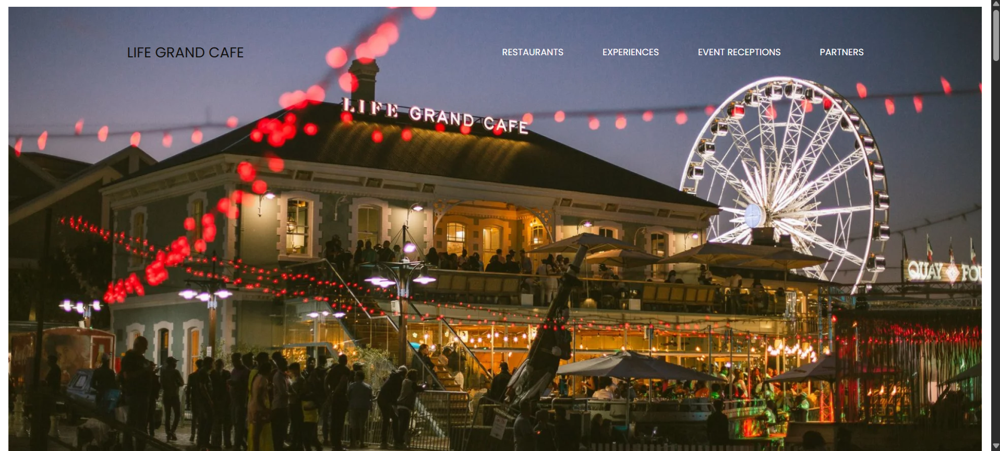
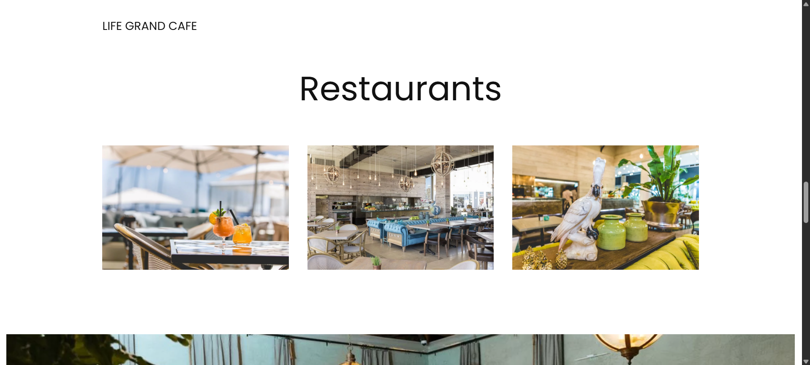
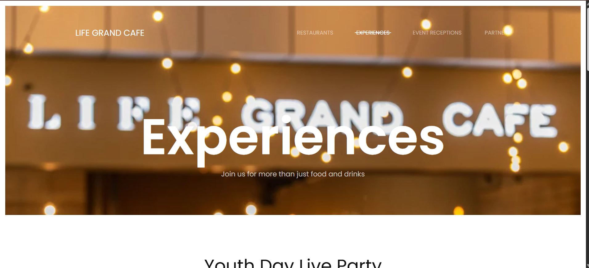

The website that I will be analysing this is a restaurant website, specifically, that captures the elegant and simple look that I have been inspired by during the creation of my website. Life Grand Café is a restaurant in South Africa known for its exquisite restaurant design, menu and overall restaurant experience. On their website, we get a display of the restaurant space, food and website visitors receive the overall aesthetic. In this week’s discussion, I will be investigating the pros and cons of this website based on the User Interface and User Experience that I have come across upon this website’s visit.


